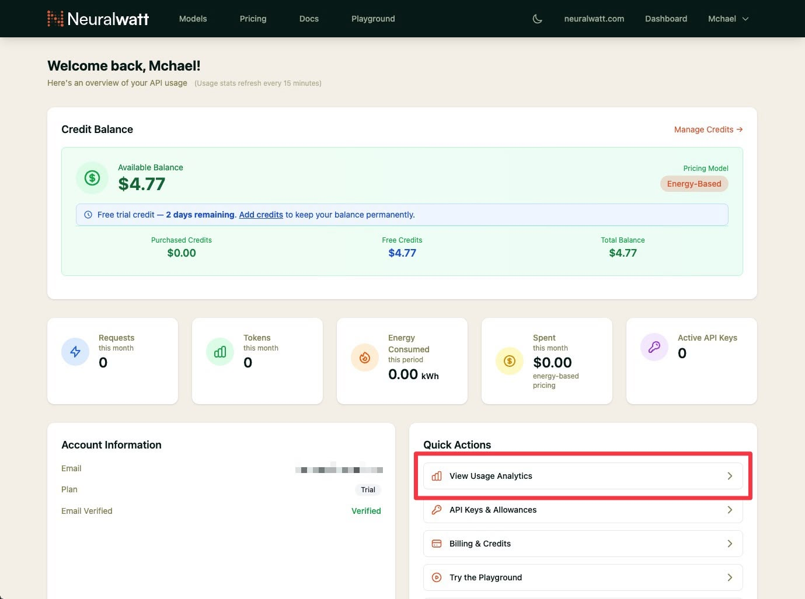
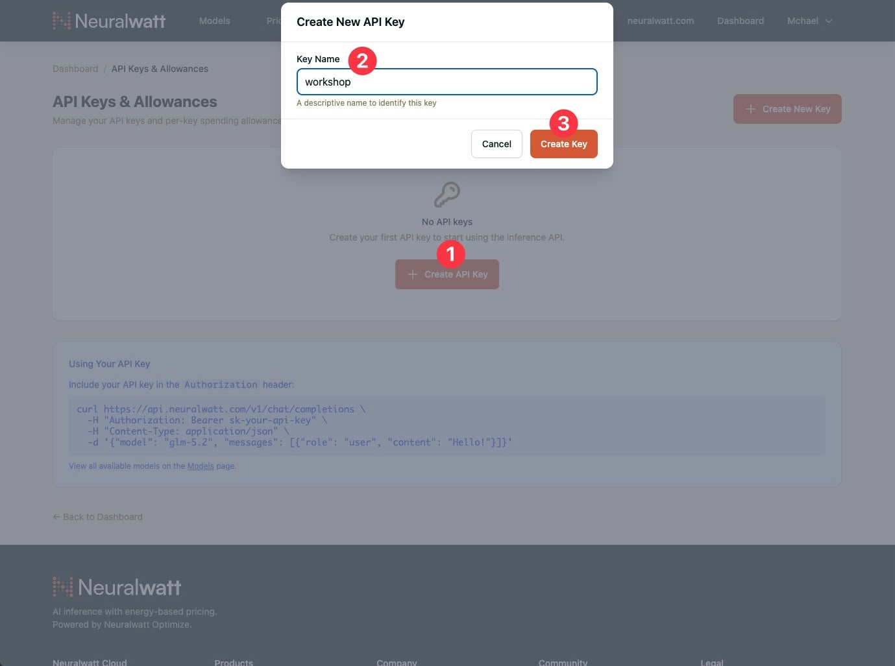
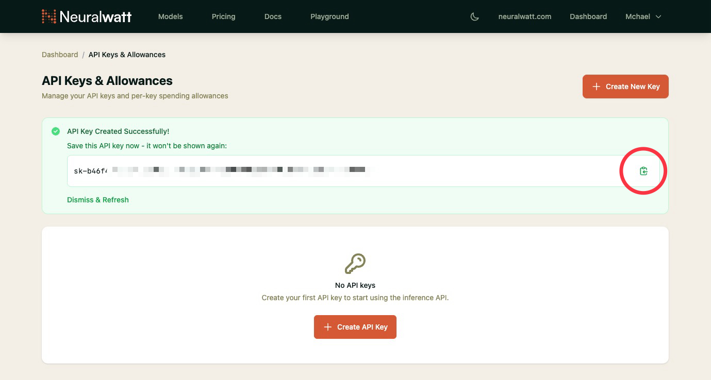

Seuraa mukana -opas
Ideasta verkkosivuksi: Tekoälyavusteinen koodaus aloittelijoille
Asenna OpenCode ja Neuralwatt ennen kuin aloitamme rakentamisen. Lisää tämä sivu kirjanmerkkeihin, jotta löydät sen helposti.
Asenna OpenCode (työpöytäsovellus)
Käytämme OpenCodea — avoimen lähdekoodin tekoälykoodausagenttia, joka toimii terminaalissa, työpöytäsovelluksena ja IDE-laajennuksissa. Tätä työpajaa varten asenna työpöytäsovellus (beta).
macOS
- Avaa opencode.ai/download
- Lataa prosessorillesi sopiva versio (Apple Silicon tai Intel)
- Avaa asennusohjelma ja vedä OpenCode Ohjelmat-kansioon
- Salli sovellus ensimmäisellä käynnistyksellä, jos macOS pyytää
Windows
- Lataussivulta valitse Windows (x64)
- Suorita asennusohjelma loppuun
- Käynnistä OpenCode Käynnistä-valikosta
Linux
- Lataa .deb- tai .rpm-paketti lataussivulta
- Asenna paketinhallinnalla ja avaa OpenCode
Valinnainen: OpenCode on saatavilla myös terminaalisovelluksena (curl -fsSL https://opencode.ai/install | bash). Työpöytäsovellus riittää tähän työpajaan.
Hanki Neuralwatt API-avain
Neuralwatt Cloud tarjoaa OpenAI-yhteensopivan rajapinnan koodausmalleille. Rekisteröityminen on ilmaista — uudet tilit saavat $5 kokeilusaldoa, voimassa 30 päivää.
Luo API-avain
- Mene osoitteeseen portal.neuralwatt.com/auth/register ja luo tili
- Kirjaudu portaaliin ja avaa Dashboard → API Keys

- Napsauta Create Key, anna avaimelle nimi (esim.
workshop)

- Kopioi avain ja säilytä sitä turvallisesti — et näe koko avainta uudelleen

Kokeilusaldo työpajaa varten
$5 kokeilusaldo on voimassa 30 päivää rekisteröitymisestä — riittää tämän päivän harjoituksiin ja jatkoharjoitteluun. Neuralwatt käyttää energiapohjaista hinnoittelua; tarkista käyttösi portaalin hallintapaneelista, jos haluat nähdä jäljellä olevan saldon.
Pidä avain yksityisenä. Älä liitä sitä chattiin, dioihin tai GitHubiin. Kohtele sitä kuten salasanaa.
Yhdistä OpenCode Neuralwattiin
Kun OpenCode on asennettu ja sinulla on Neuralwatt API-avain, yhdistä se työpöytäsovelluksessa — konfiguraatiotiedostoja tai ympäristömuuttujia ei tarvita.
OpenCode Desktopissa
- Avaa OpenCode ja napsauta sivupalkissa asetukset-kuvaketta (ratas)
- Valitse Server-kohdasta Providers
- Etsi Neuralwatt ja napsauta sen vieressä olevaa +-painiketta
- Liitä API-avaimesi ja napsauta Continue
- Napsauta chattiruudun alapuolella olevaa mallin nimeä (Build-kohdan vieressä), etsi Neuralwatt-kohdasta ja valitse Kimi K2.6 — sitä mallia käytämme tämän päivän työpajassa
Käytä Kimi K2.6-mallia kaikissa tämän päivän harjoituksissa, jotta kaikilla on sama asetus. Voit kokeilla muita Neuralwatt-malleja myöhemmin mallivalitsimesta.


Lisätietoja: Neuralwatt × OpenCode -opas ja OpenCoden palveluntarjoaja-dokumentaatio.
Kehotteiden kirjoittaminen
Tekoäly toimii parhaiten, kun kirjoitat kuin ohjeistaisit avuliaan tiimikaverin: selkeä tavoite, riittävästi kontekstia ja yksi pyyntö kerrallaan.
Mikä tekee hyvän kehotteen
- Kerro mitä haluat — esim. "yksisivuinen portfolio tiedostoon
index.html" tai "ravintolasivusto valikolla ja aukioloajoilla". - Aseta rajat — "Käytä vain HTML:ää ja CSS:ää, ei kehyksiä" tai "vain yksi tiedosto".
- Anna oikeat tietosi — korvaa
[hakasulkeet]nimelläsi, menu-kohteilla, väreillä tai tekstillä. - Pyydä pieniä vaiheita — ensin luonnos, sitten sisältö, sitten ulkoasu, sitten mobiilikorjaukset.
- Jaa mitä näet — jos jokin menee rikki, liitä virheilmoitus tai kuvaile mikä näyttää väärältä ruudullasi.
Lauseita, joita voit käyttää uudelleen
- "Kysy minulta kysymyksiä ennen kuin kirjoitat mitään koodia."
- "Anna ensin suunnitelma ja odota hyväksyntääni."
- "Tee pienin mahdollinen muutos — älä kirjoita koko sivua uudelleen."
- "Selitä yksinkertaisesti mitä muutit."
- "Tässä on virhe. Diagnosoi ennen korjaamista."
Heikko: "Tee verkkosivustostani parempi."
Vahva: "Paranna index.html-tiedoston hero-osaa: isompi otsikko, enemmän väliä, säilytä nykyinen teksti, mobiiliystävällinen."
Vinkki: Suuremmissa ominaisuuksissa vaihda Plan mode -tilaan (Tab-näppäin), tarkista suunnitelma, palaa Build-tilaan ja sano "Jatka.". Pysyt ohjaksissa — lue vastaus, testaa selaimessa ja lähetä seuraava kehote.
Esimerkkikehotteet
Valitse yksi polku alta. Kopioi jokainen kehote OpenCodeen järjestyksessä.
Korvaa kaikki [hakasulkeissa] olevat tiedot omillasi ennen lähettämistä.
Polku A — Henkilökohtainen portfolio
Sopii opiskelijoille, freelancereille ja uraa vaihtaville, jotka esittelevät työtään.
Vaihe 1 — Ensimmäinen luonnos
Luo yksisivuinen portfolio-verkkosivusto yhteen tiedostoon: index.html. Käytä vain HTML:ää ja CSS:ää (ei kehyksiä). Sisällytä nämä osiot: - Hero-osio nimelläni [Nimesi], lyhyellä iskulauseella [esim. "Aloitteleva web-kehittäjä"] ja ystävällinen kuvapaikka - Tietoa minusta (3–4 lausetta tästä tiedosta: [liitä lyhyt esittely]) - Taidot (6–8 taitoa tageina tai yksinkertaisena listana: [esim. viestintä, asiakaspalvelu, Canva]) - Projektit (2–3 projektikorttia otsikolla, yhden lauseen kuvauksella ja "Katso" -linkkipaikalla) - Yhteystiedot (sähköposti [sinun@email.com] ja linkit [LinkedIn / GitHub / valinnainen]) Tyyli: selkeä, moderni, paljon tyhjää tilaa, luettavat fontit, mobiiliystävällinen. Käytä rauhallista väripalettia yhdellä korostusvärillä.
Vaihe 2 — Tee siitä omasi
Päivitä index.html oikealla sisällölläni: - Nimi: [Nimesi] - Iskulause: [Iskulauseesi] - Tietoa minusta: [Esittelykappaleesi] - Taidot: [listaa taitosi] - Projektit: [Projekti 1 otsikko + kuvaus], [Projekti 2 otsikko + kuvaus] - Sähköposti: [sinun@email.com] Säilytä sama asettelu. Paranna typografiaa niin, että otsikot erottuvat ja leipäteksti on helppolukuista.
Vaihe 3 — Viimeistele ulkoasu
Paranna index.html:n visuaalista ulkoasua muuttamatta tekstiäni: - Lisää hienovaraiset hover-efektit painikkeisiin ja projektikortteihin - Käytä johdonmukaista välistysjärjestelmää (padding/margins) - Lisää yläreunaan yksinkertainen navigaatiopalkki, joka linkittää jokaiseen osioon (Tietoa, Taidot, Projektit, Yhteystiedot) - Tee hero-osiosta tervetullut, ei ahdas Kerro selkokielellä mitä muutit.
Vaihe 4 — Mobiilitarkistus
Tee index.html:stä hieno puhelimilla: - Pinota osiot pystysuunnassa mukavalla paddingilla - Varmista, että teksti on mobiilissa vähintään 16px - Tee napautuskohteista (linkit, painikkeet) helppoja painaa - Testaa, ettei mikään ylitä vaakasuunnassa Selitä mobiiliin lisäämäsi CSS.
Vaihe 5 — Korjaa ja iteroi (käytä milloin tahansa)
[Osion nimi] -osio ei näytä oikealta ruudullani. [Kuvaile mitä näet, esim. "teksti on liian pientä" tai "kortit menevät päällekkäin"]. Tee pienin mahdollinen korjaus. Älä kirjoita koko sivua uudelleen.
Polku B — Yrityksen aloitussivu
Sopii pienyrittäjille, jotka haluavat asiakkaiden löytävän aukioloajat, valikon ja miten vierailla tai tilata.
Etkö ole ravintola? Säilytä samat vaiheet — vaihda valikko palveluihin/tuotteisiin ja aukioloajat siihen, miten asiakkaat tavoittavat sinut.
Vaihe 1 — Ensimmäinen luonnos
Luo yksisivuinen ravintola-verkkosivusto yhteen tiedostoon: index.html. Käytä vain HTML:ää ja CSS:ää (ei kehyksiä). Ravintolan tiedot: - Nimi: [Ravintolan nimi] - Iskulause: [esim. "Tuoretta pastaa ja puu-uunipizzaa keskustassa"] - Keittiötyyppi: [esim. italialainen, kahvila] - Osoite: [katu, kaupunki] - Puhelin: [puhelinnumero] - Aukioloajat: [esim. ma–la 11–21, su 12–20] Sisällytä nämä osiot: 1. Hero ravintolan nimellä, iskulauseella ja kahdella painikkeella: "Katso valikko" ja "Soita / Varaa" 2. Tietoa (lämpimät 2–3 lausetta ravintolasta) 3. Valikon kohokohdat (4–6 suosittua annosta lyhyillä kuvauksilla ja hinnoilla valuutassa [valuutta]) 4. Aukioloajat ja sijainti (osoite, aukioloajat, upotettu karttapaikka tai "Hae reittiohjeet" -linkki Google Mapsiin) 5. Yhteystiedot ja some (puhelin, sähköposti valinnainen, Instagram/Facebook-paikat) Tyyli: herkullinen ja luotettava — hyvät ruokakuvapaikat, selkeä typografia, toimii mobiilissa.
Vaihe 2 — Oikea valikko ja tiedot
Päivitä index.html oikeilla tiedoillamme: Ravintola: [Ravintolan nimi] Tietoa: [2–3 lausetta tarinastanne, kokkista tai erikoisuudesta] Valikkokohteet (käytä näitä tarkalleen): 1. [Annos] — [hinta] — [yhden lauseen kuvaus] 2. [Annos] — [hinta] — [kuvaus] 3. [Annos] — [hinta] — [kuvaus] 4. [Annos] — [hinta] — [kuvaus] 5. [Annos] — [hinta] — [kuvaus] 6. [Annos] — [hinta] — [kuvaus] Aukioloajat: [aukioloajat] Osoite: [koko osoite] Puhelin: [puhelin] Varausohje: [esim. "Kävelyasiakkaat tervetulleita" tai "Varaa puhelimitse"] Säilytä yksi sivu. Tee hinnoista helposti luettavia.
Vaihe 3 — Auta asiakkaita toimimaan
Paranna index.html:ää niin, että asiakkaat tietävät mitä tehdä seuraavaksi: - "Katso valikko" vierittää sujuvasti valikko-osioon - "Soita / Varaa" käyttää tel:[puhelin], jotta mobiilikäyttäjät voivat soittaa napauttamalla - Lisää kiinteä tai yläreunan navigaatio: Valikko, Aukioloajat, Sijainti, Yhteystiedot - Lisää lyhyt rivi [kotiinkuljetus / nouto / ravintolassa syöminen, jos soveltuu] Älä muuta valikkotekstiämme. Keskity selkeyteen ja toimintakehotuksiin.
Vaihe 4 — Ammattimainen ilme
Tee ravintolasivustosta premium-tuntuinen ja paikallinen: - Valitse väripaletti, joka sopii [keittiötyyppiin] (lämpimät sävyt leipomolle, raikkaat vihreät terveelle jne.) - Käytä laadukkaita kuvapaikkoja hero-osioon ja 2–3 annokseen (placeholder-URL:t käyvät) - Lisää yksinkertainen alatunniste tekijänoikeuksilla, osoitteella ja toistetuilla aukioloajoilla Säilytä kaikki sisältö yhdessä index.html-tiedostossa.
Vaihe 5 — Korjaa ja iteroi (käytä milloin tahansa)
Mobiilissa [kuvaile ongelma — esim. "valikon hinnat rivittyvät huonosti" tai "Soita-painike on vaikea napauttaa"]. Korjaa vain tämä ongelma index.html:ssä. Näytä tarkalleen mitä CSS:ää muutit.
Bonuskehotteet — Molemmat polut
Käytä milloin tahansa kummassakin polussa.
Lisää kuva
Lisää kuva [osion nimi] -osioon. Käytän tätä kuvan URL:ää: [liitä linkki] tai paikkakuvaa. Pidä se responsiivisena ja lisää alt-teksti saavutettavuutta varten.
Selitä koodi
Selitä index.html yksinkertaisesti aloittelijalle. Mitä kukin pääosa tekee? Mitä minun pitäisi muokata, jos haluan vaihtaa puhelinnumeroni tai valikon hinnan?
Turvallinen pieni muutos
Vaihda vain korostusväri arvoon [värin nimi tai hex] ja pääotsikon fonttityyli. Älä muuta asettelua tai kirjoita osioita uudelleen.
Työpajan aikana
Näin työskentelemme tekoälyn kanssa
- Kuvaile tavoite selkeästi (mitä sivun pitää tehdä)
- Tarkista tekoälyn ehdotukset ennen suurten muutosten hyväksymistä
- Avaa sivusto selaimessa usein
- Jos jokin menee rikki, liitä virheilmoitus takaisin tekoälylle
- Iteroi pienin askelin — sinä pidät ohjat käsissä
Hyödylliset OpenCode-komennot
- Settings → Providers — lisää tai vaihda tekoälypalveluntarjoaja (esim. Neuralwatt)
- Model picker (chattiruudun alapuolella) — pitäisi näyttää Kimi K2.6 Neuralwatt-kohdassa tänään
- /init — auttaa OpenCodea ymmärtämään projektisi (aja kerran per kansio)
- /undo — peru viimeisin muutos
Jos jokin menee pieleen
- Todennusvirheet — avaa Settings → Providers → Neuralwatt ja liitä API-avain uudelleen
- Saldo loppunut (Neuralwatt) — tarkista saldo portaalin hallintapaneelista; kokeilusaldo kestää 30 päivää
- Mallia ei löydy — napsauta chattiruudun alapuolella olevaa mallin nimeä, etsi Kimi K2.6 Neuralwatt-kohdasta ja valitse se listasta (älä kirjoita mallitunnuksia käsin)
- Kysy fasilitaattorilta — olemme täällä auttamassa